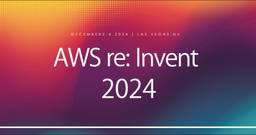
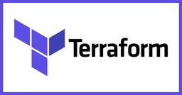

NHN テコラス Tech Blog | AWS、Google Cloudなどのインフラ技術ブログ
https://techblog.nhn-techorus.com
NHN テコラス株式会社が、AWSを中心としたクラウドインフラやオンプレミス、ビッグデータ、機械学習などの技術ネタを中心にご紹介するブログです。 現場のエンジニアやデータサイエンティストが同じ仕事に携わる方にとって便利なものや知りたいであろう情報を提供することを目的としています
フィード

AWS re:Invent を最小の持ち物で攻略する方法
NHN テコラス Tech Blog | AWS、Google Cloudなどのインフラ技術ブログ
はじめに こんにちは、Shunです！ re:Invent に参加する人が必ず検索するであろうキーワード、それは 「re:Invent 持ち物」 です。 過去2年間で海外に計30泊以上した経験を持つ私が、re:Invent のための持ち物の最...続きを読むAWS re:Invent を最小の持ち物で攻略する方法 first appeared on NHN テコラス Tech Blog | AWS、Google Cloudなどのインフラ技術ブログ.
1日前

Terraform × GitHub Actionsでドリフト検出
NHN テコラス Tech Blog | AWS、Google Cloudなどのインフラ技術ブログ
この記事はNHN テコラス Advent Calendar 2024の19日目の記事です。 はじめに インフラ管理において、コードと実環境の同期は非常に重要です。 たとえば、手動でリソースを変更した場合や、コードの適用漏れがあった場合、実環...続きを読むTerraform × GitHub Actionsでドリフト検出 first appeared on NHN テコラス Tech Blog | AWS、Google Cloudなどのインフラ技術ブログ.
1日前
「クラウド月次キャッチアップ会」を半年やってみた所感をレポート！
NHN テコラス Tech Blog | AWS、Google Cloudなどのインフラ技術ブログ
この記事は NHN テコラス Advent Calendar 2024 の 18 日目の記事です。 概要 先日、AWS re:Invent 2024 が開催されました！ 私は現地に参加することはできませんでしたが、様々な新サービスや新機能が...続きを読む「クラウド月次キャッチアップ会」を半年やってみた所感をレポート！ first appeared on NHN テコラス Tech Blog | AWS、Google Cloudなどのインフラ技術ブログ.
2日前
エンジニアとして 1 年間で “10本” 社外セミナー登壇をした話
NHN テコラス Tech Blog | AWS、Google Cloudなどのインフラ技術ブログ
この記事はNHN テコラス Advent Calendar 2024の17日目の記事です。 はじめに こんにちは、フクナガです。 2024 年は、非常に多くの種類のお仕事を経験させていただいたのですが、 中でも多くの時間を使ってきたのが「セ...続きを読むエンジニアとして 1 年間で “10本” 社外セミナー登壇をした話 first appeared on NHN テコラス Tech Blog | AWS、Google Cloudなどのインフラ技術ブログ.
3日前

[AWS re:Invent 2024] S3 TablesをEMR経由で設定してAthenaから検索する
NHN テコラス Tech Blog | AWS、Google Cloudなどのインフラ技術ブログ
はじめに 先日のre:InventでS3の新機能としてS3 Tablesが発表されました。S3 TablesはApache Icebergを手軽に扱えるようになったサービスですが、それに加えて運用コストを下げる機能が実装されています。 20...続きを読む[AWS re:Invent 2024] S3 TablesをEMR経由で設定してAthenaから検索する first appeared on NHN テコラス Tech Blog | AWS、Google Cloudなどのインフラ技術ブログ.
4日前
[AWS re:Invent 2024]re:Invent のパフォーマンスと筋肥大を最大化する方法
NHN テコラス Tech Blog | AWS、Google Cloudなどのインフラ技術ブログ
この記事は NHN テコラス Advent Calendar 2024の16日目の記事です。 はじめに こんにちは、Shunです！ 先日、AWS re:Invent 2024 に参加させていただきました！ 参加にあたって1つの懸念がありまし...続きを読む[AWS re:Invent 2024]re:Invent のパフォーマンスと筋肥大を最大化する方法 first appeared on NHN テコラス Tech Blog | AWS、Google Cloudなどのインフラ技術ブログ.
4日前
NHN テコラスの広報活動（2024年4月〜12月）
NHN テコラス Tech Blog | AWS、Google Cloudなどのインフラ技術ブログ
こんにちは、NHN テコラスの広報です。本記事では、NHN テコラスで発生している広報活動の一部について、お伝えします！ NHN テコラスの読み方は、「えぬえいちえぬてこらす」と読みます。 この記事はNHN テコラスAdvent Calen...続きを読むNHN テコラスの広報活動（2024年4月〜12月） first appeared on NHN テコラス Tech Blog | AWS、Google Cloudなどのインフラ技術ブログ.
5日前
『生成 AI』における『ガードレール』とは？
NHN テコラス Tech Blog | AWS、Google Cloudなどのインフラ技術ブログ
この記事はNHN テコラス Advent Calendar 2024 の14日目の記事です。 はじめに こんにちは、YUJIです。 最近、Amazon Bedrockをはじめとする生成 AIの活用情報や 生成 AIにおけるガードレール関連の...続きを読む『生成 AI』における『ガードレール』とは？ first appeared on NHN テコラス Tech Blog | AWS、Google Cloudなどのインフラ技術ブログ.
6日前
[AWS re:Invent 2024]EXPO参加してみた
NHN テコラス Tech Blog | AWS、Google Cloudなどのインフラ技術ブログ
はじめに 2024年12月2日-2024年12月6日まで開催されたre:Inventに参加してきました。 re:Inventには日本で開催されているAWS Summitと同様に企業ブースがあったので見てきました！ 各ブースの感想をまとめたい...続きを読む[AWS re:Invent 2024]EXPO参加してみた first appeared on NHN テコラス Tech Blog | AWS、Google Cloudなどのインフラ技術ブログ.
7日前
Amazon Aurora DSQL と Google Cloud Spanner のアーキテクチャを比較してみた！
NHN テコラス Tech Blog | AWS、Google Cloudなどのインフラ技術ブログ
この記事は NHN テコラス Advent Calendar 2024 の 13 日目の記事です。 はじめに こんにちは、Shunです！ 先日、AWS re:Invent 2024 で Amazon Aurora DSQLというグローバルに...続きを読むAmazon Aurora DSQL と Google Cloud Spanner のアーキテクチャを比較してみた！ first appeared on NHN テコラス Tech Blog | AWS、Google Cloudなどのインフラ技術ブログ.
7日前